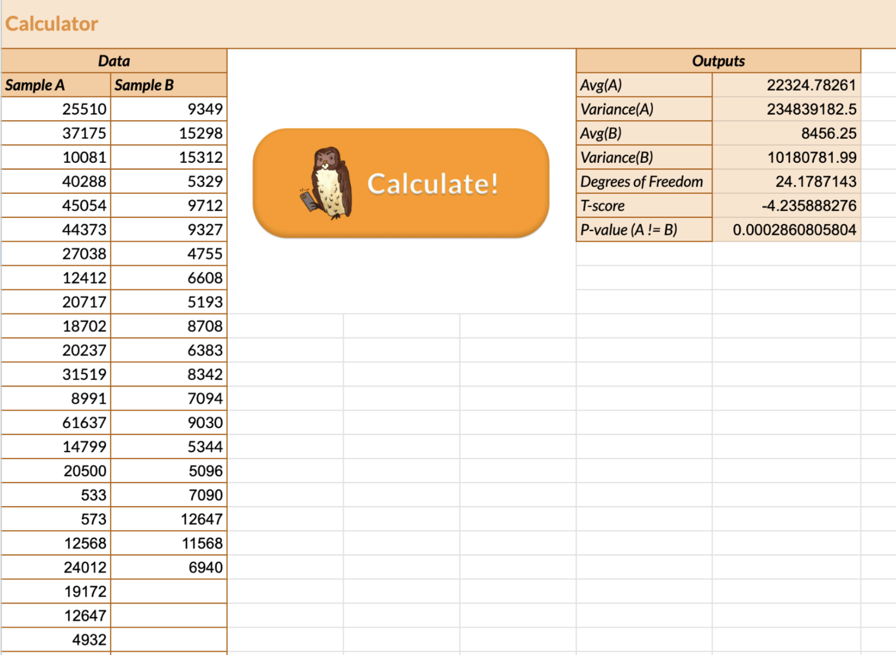

Overview:
In this assignment, we focused on conducting A/B tests to
compare the effectiveness of two UI designs (showcased below).
The goal of this assignment was to determine which design led to
better user interaction. As we learned, A/B testing allows us to
compare variations of a design and collect quantitative data on
user behavior. By analyzing metrics like misclick rate, time on
page, and time to first click, we can make data-driven decisions on
design optimization, overall improving user experience.
Screenshot of Version A:
Screenshot of Version B:

Creating Hypotheses:
Misclick Rate:
- Null Hypothesis: A and B will have the same misclick rate.
- Alternative Hypothesis: A will have a higher misclick rate than B.
- Null Hypothesis Prediction: I predict that we will reject the null hypothesis because the changes made in B were made with the intention of lowering the misclick rate.
- Alternative Hypothesis Reasoning: I think that A will have a higher misclick rate than B because the changes made in B make it easier to distinguish the different types of information. This means that there will be fewer misclicks on B.
Time on Page:
- Null Hypothesis: A and B will have the same time on page average.
- Alternative Hypothesis: A will have a higher time on page average than B.
- Null Hypothesis Prediction: I predict that we will reject the null hypothesis because the changes made in B were made with the intention of making it easier to distinguish information, thus making the average time on page lower.
- Alternative Hypothesis Reasoning: I think that A will have a higher time on page average than B because in A, it is hard to notice a distinction between all of the data.
Time to First Click:
The metric that I chose is the time to time to first click, specifically the average. I chose this because it can tell you a lot about how fast a user can find the displayed information.
- Null Hypothesis: A and B will have the same time to first click average.
- Alternative Hypothesis: A will have a higher time to first click average than B.
- Null Hypothesis Prediction: I predict that we will reject the null hypothesis because the changes in B were made so that it is easy to identify the information, making the time to first click lower in B.
- Alternative Hypothesis Reasoning: I think that A will have a higher time to first click average than B because it will take them longer to identify which button to click, since it is hard to distinguish which button makes the appointment in A.
Run Statistical Tests on the Data:
What each piece of data tells us:
- Significance level: It tells us the threshold below which we consider a result to be statistically significant. In other words, it is the probability of rejecting the null hypothesis when it is actually true.
- ꭓ²/T-score: It tells us the magnitude of the difference between the two groups.
- P-value: It tells us how likely it is to obtain the observed data if the null hypothesis is correct.
Misclick Rate:
- I am doing a ꭓ² test to the misclick rate because we want to compare the frequency of version A with the frequency of version B, in other words, it is categorical.

- Statistical Significance: The difference between versions A and B is not statistically significant.
- Important Values:
- Significance level: 0.05
- ꭓ²: 1.828
- P-value: 0.1763
- Conclusion:
- The p-value is greater than the significance level, so this tells us that we do not have enough evidence to reject the null hypothesis. Thus, we fail to reject the null hypothesis.
Time on Page:
- I am doing a two-tailed t-test for time on page because time on page is continuous, also because we are interested in whether one version is significantly greater than the other.
- 
- Statistical Significance: The difference between versions A and B in terms of the time spent on the page is statistically significant.
- Important Values:
- Significance level: 0.05
- Average of A: 22,324.783 ms
- Average of B: 8,456.25 ms
- P-value: 0.000286
- Conclusion:
- Since the p-value is less than the significance level, there is strong evidence that suggests that users spend significantly less time on page B compared to page A. This is also seen in the averages of both versions: the average of A is significantly larger than that of B. Thus, we reject the null hypothesis.
Time to First Click:
- I am doing a two-tailed t-test for time on page because time on page is continuous, also because we are interested in whether one version is significantly greater than the other.
- Statistical Significance: The difference between versions A and B when it comes to time until the first click is statistically significant.
- Important Values:
- Significance level: 0.05
- Average of A: 12,217.429 ms
- Average of B: 4,723.4 ms
- P-value: 0.0000834
- Conclusion:
- Since the p-value is really close to zero while being less than the significance level, this means that there is strong evidence suggesting users spend significantly less time on B than A. We can also see this in the averages of both versions: the average of A is significantly larger than that of B. Thus, reject the null hypothesis.
Summary Statistics:
When evaluating the A/B test results, we saw that Version A exhibits a higher average misclick rate at 26.087%, whereas Version B shows a lower rate of 10%. Regarding the users total time on the page, Version A has a longer average (22,324.783 ms) and median (20,237 ms), compared to Version B's average (8,456.25 ms) and median (7,718 ms). We also saw that Version A's time to first click is longer on average (12,217.429 ms) and median (9,523 ms) than Version B's (4,723.4 ms and 4,284.5 ms). These statistics suggest potential usability and engagement differences between the versions, providing insights crucial for further optimization and decision-making in the A/B testing process.